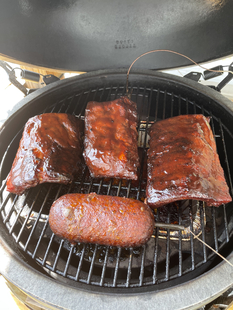

Sweet and Sour Sauce

Sticky Ribs with Thai inspired Sauce
Slow smoked baby back ribs are so awesome! But imagine the surprise when you taste the tangy, spicy, sweet and sour sauce that glazes these ever so delightful delacacies!
The ribs are your job, but this is the killer sauce recipie that will make your culinary masterpiece stand alone.
Ingredients (recipie is easily doubled)
- 1 Cup White Vinegar
- 1 Cup Sugar
- 2 Tbs. Soy Sauce
- 1/4 tsp Salt
- 1 Tbs. Chili Garlic Sauce
- 1 Tbs. Finely Minced Garlic
Steps
- Combine vinegar and sugar in a saucepan
- Heat and stir until the sugar is disolved
- Add remaining ingredients
- Bring to a boil stiring freqently
- Monitor temperature until 220 - 224 F
- Remove from burner and cool until needed